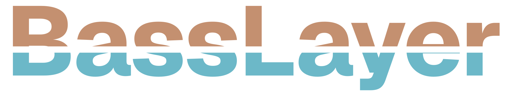
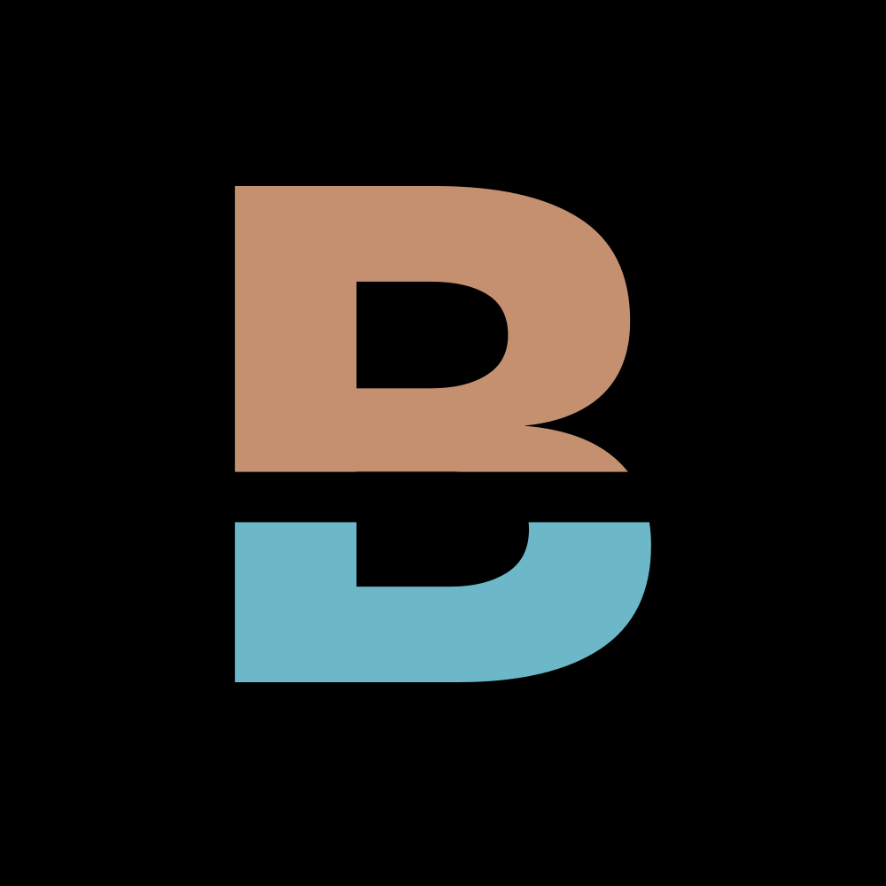
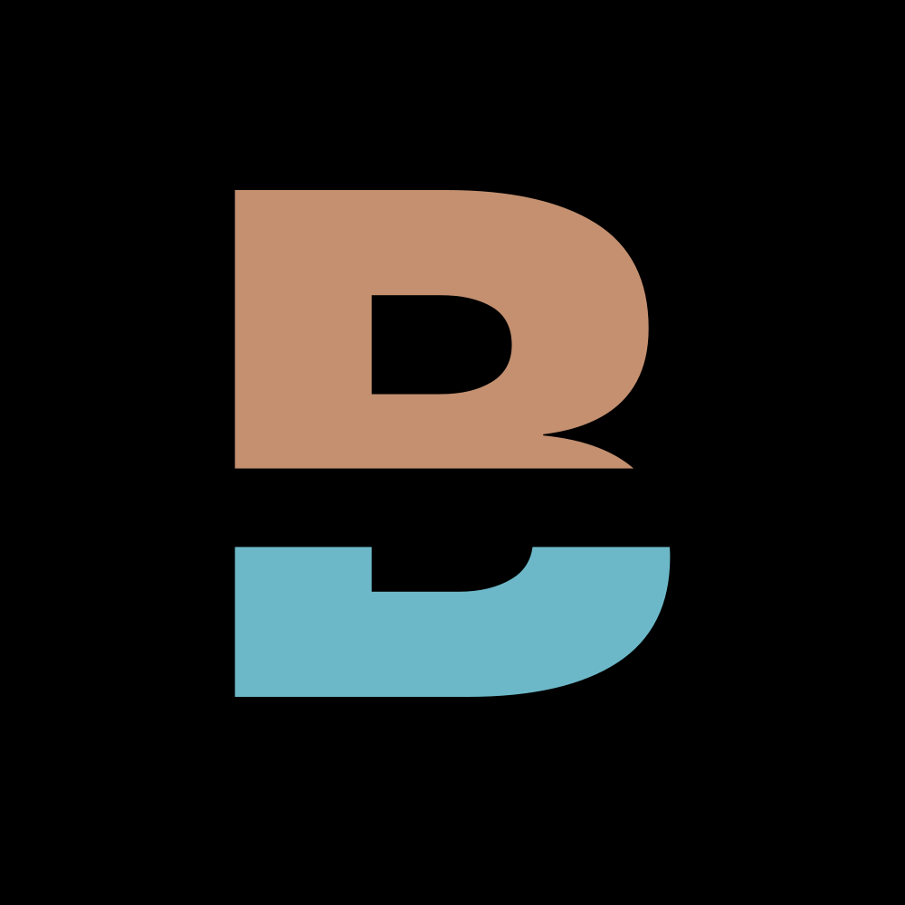
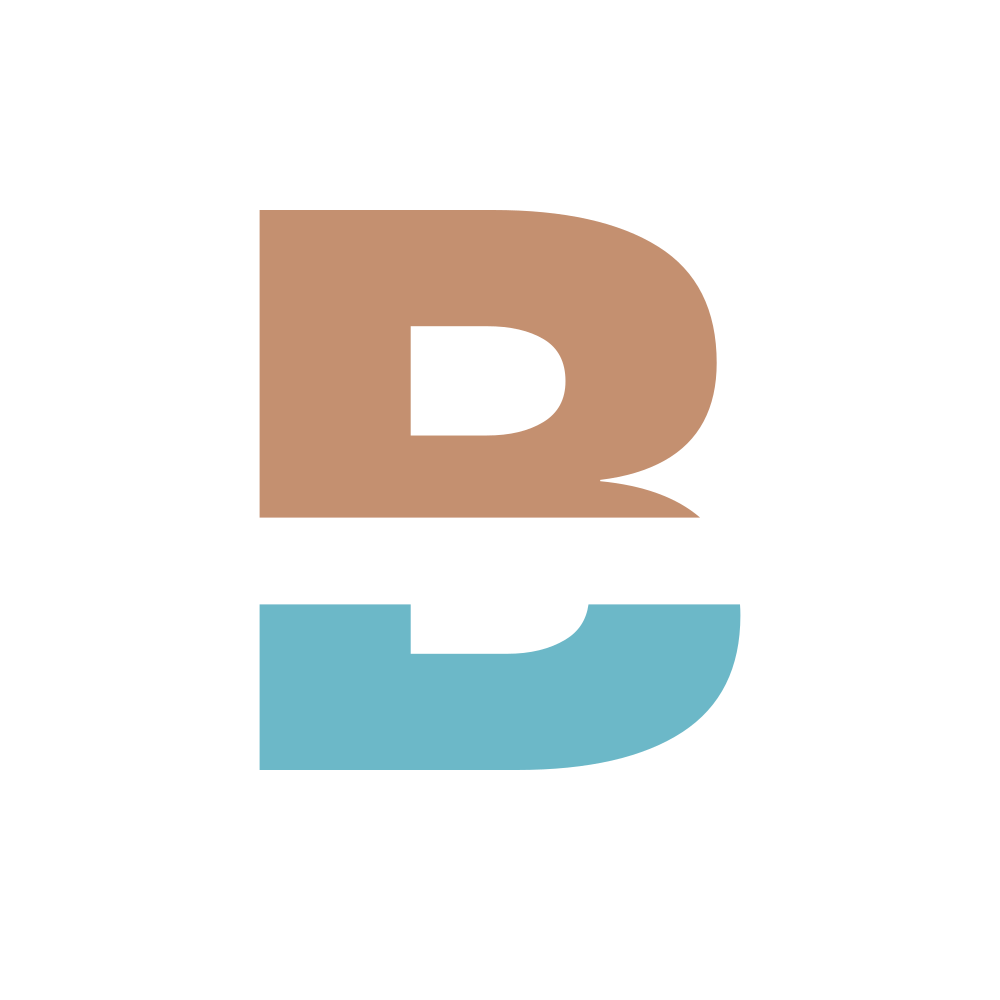
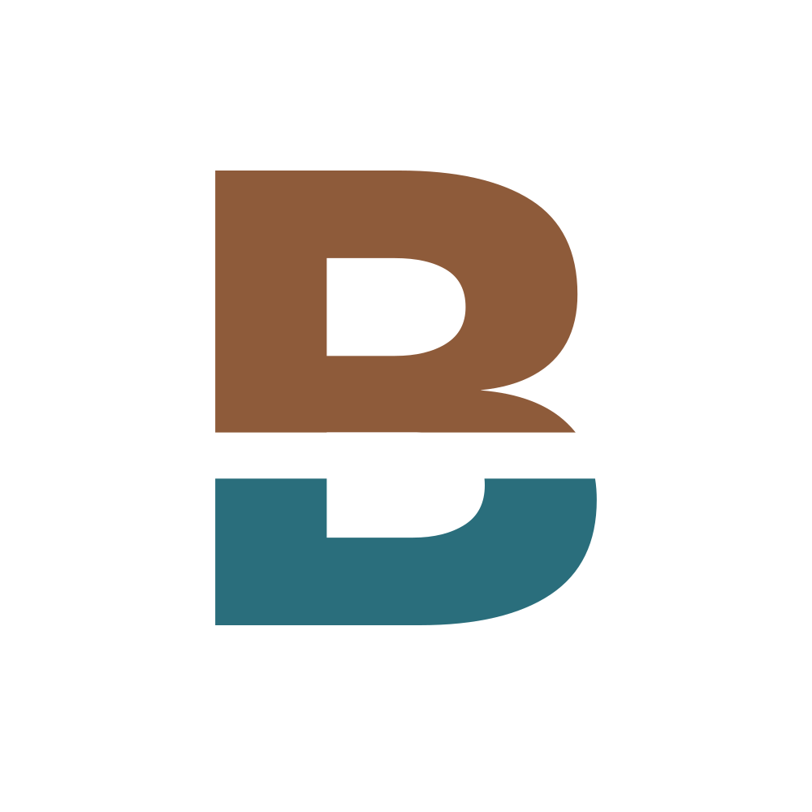
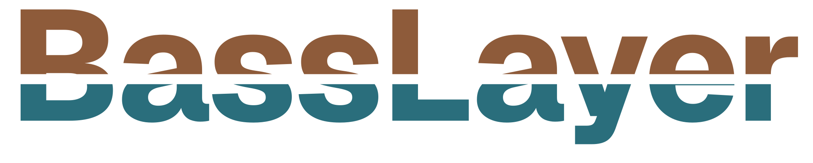
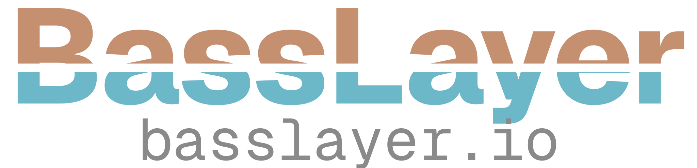

Las letras salen de Geist convertidas en trazados (licencia OFL, sin nombre reservado: el logo no depende de la fuente) y el corte es una operación booleana real, no una máscara: el archivo es vector puro y va directo a imprenta. Todas las medidas en unidades de la fuente (1000 = la altura de la letra).
Arriba, la versión de la ronda 3 (texto de la fuente con una máscara). Abajo, el dibujo fino: mismo concepto, con el corte exacto, la ranura medida, el espaciado óptico y vector puro.

Debajo de ~200 px de ancho la ranura de 64 se afina demasiado. Por eso hay una versión chica (peso 820, ranura de 100 y más aire entre letras) que la reemplaza en el header, la firma de mail o un sticker diminuto. Comparalas al mismo tamaño:
La B del logotipo con el mismo horizonte. Centrada por su forma y ópticamente (la panza de abajo pesa: sube un poco), dentro de la zona segura del ícono de Android. A 32 px y menos va la versión chica (más peso y ranura más ancha).



BassLayer


La versión de promoción no es otro logo: es el logotipo con su firma (basslayer.io en Geist Mono, centrada y al 62 % del ancho). Va en lo que se regala o se pega en la calle, para que quien lo vea sepa dónde entrar.